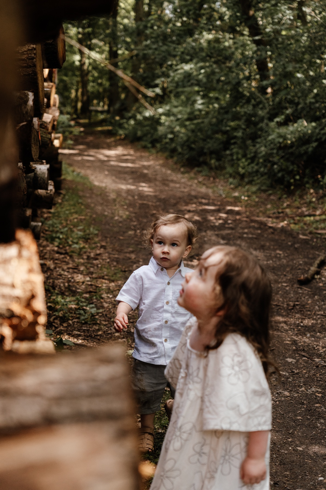
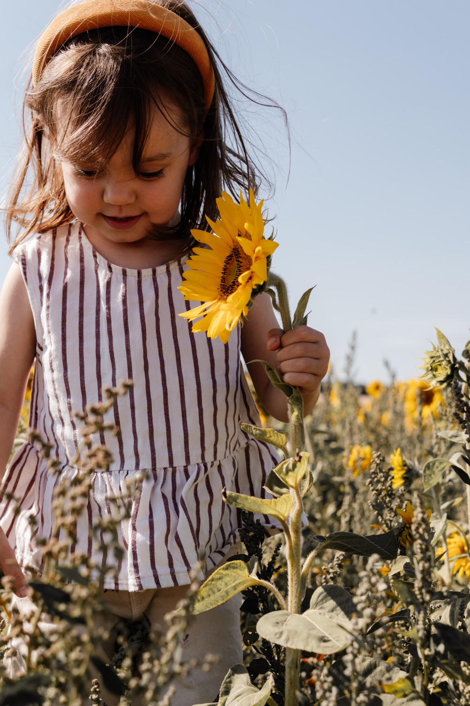
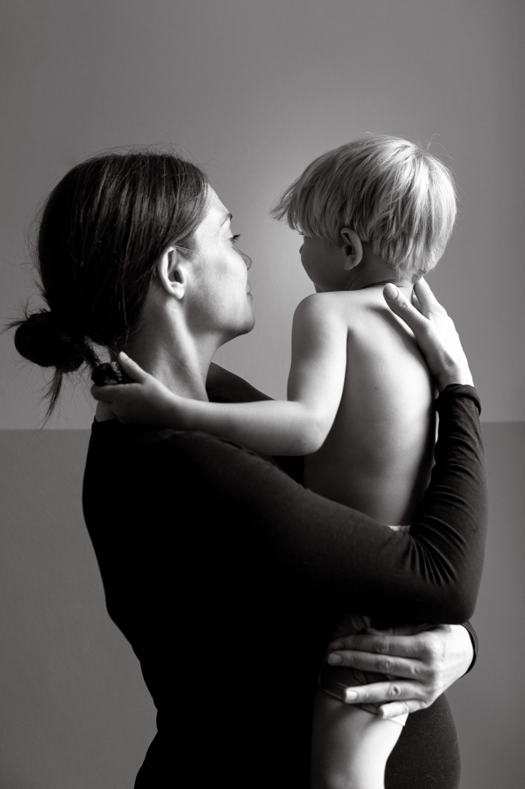
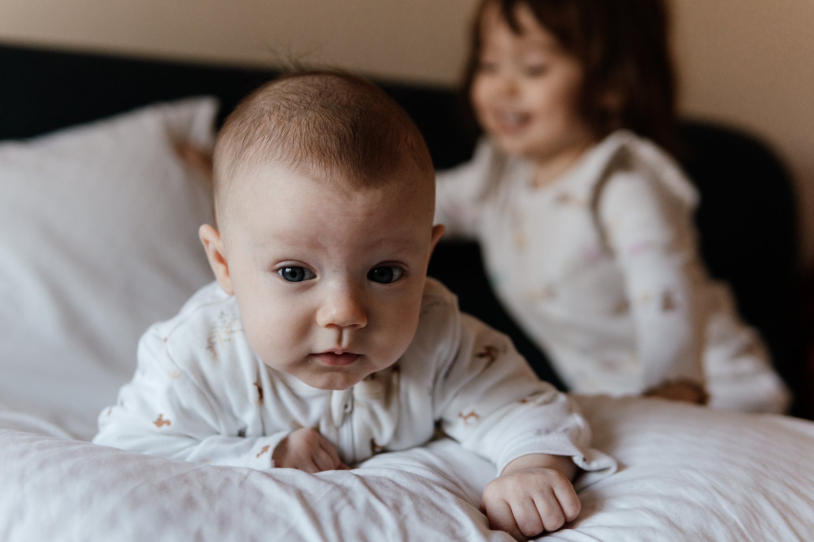
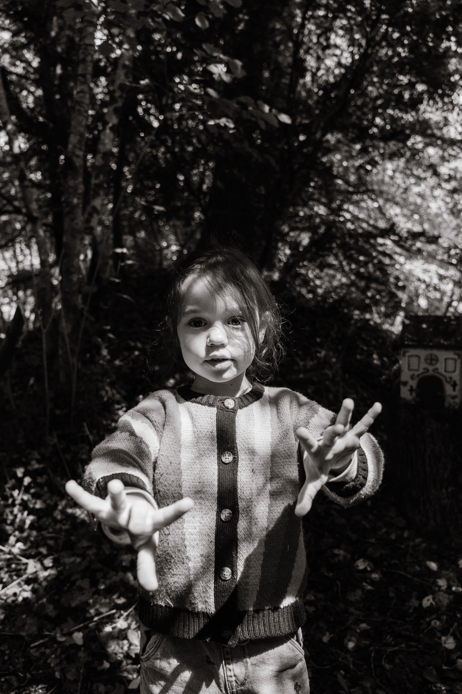
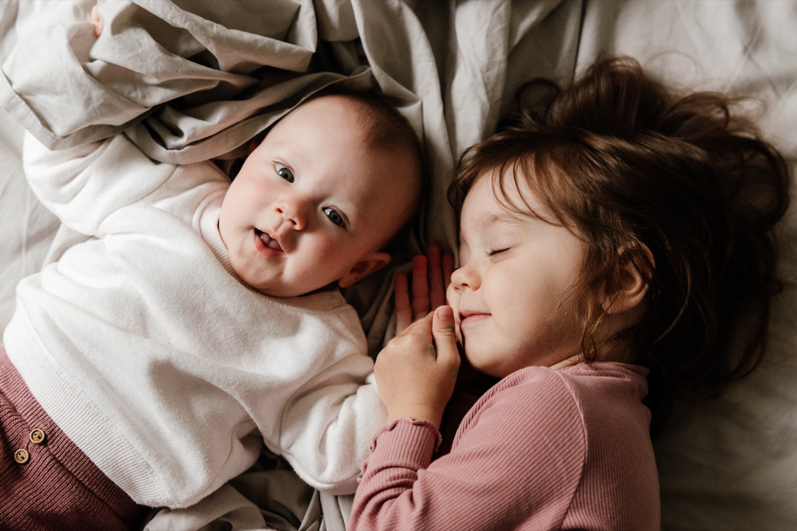
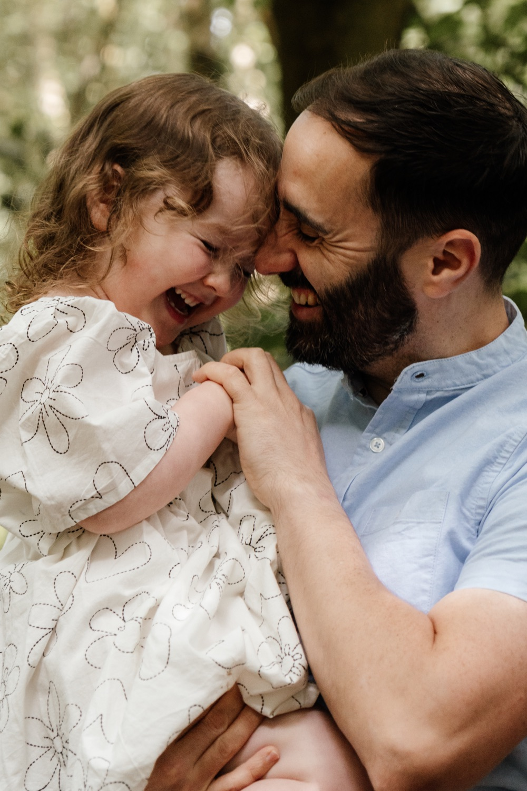
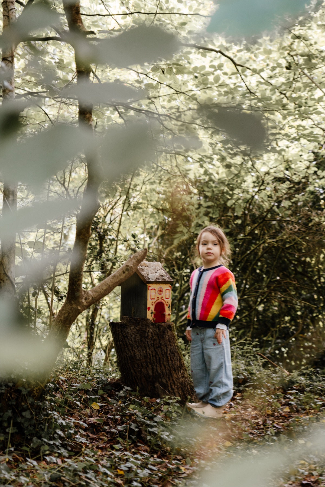

Your Family
Session
Welcome
Thank you for trusting me with this part of your family's story. That means a great deal, and I don't take it lightly.
This guide covers everything you need between now and the day itself: what to expect, what to wear, and what happens once your photographs are ready. Read it whenever you get five quiet minutes.
Anything I haven't covered, just ask.
Cam x


Three steps.
Fill in your quick client questionnaire. It helps me get to know your family and what matters most, so the session is shaped around you.
Turn up as you are, and let me do the rest.
Within two weeks, your private online gallery lands in your inbox, ready to swoon over.

All you have to do is be together.
This is the part I most want you to hear: on the day, there's nothing to perform and nothing to get right.
- Let it be as loud and chaotic as it likes. That's the good stuff, not something to apologise for.
- We can pause, stop, or take a breather any time. Just say.
- You don't have to host me or make conversation. Chatting is welcome, but so is quiet.
- And if it's simply not the day or someone's poorly, message me and we'll move it. Little ones are unpredictable, and I plan around that, not against it.
I block out up to two hours, so nothing ever feels rushed, though we rarely need all of it. There's no strict running order and no clock.
Here's the rhythm of it: I'll guide you into a moment, I might suggest where to stand for the light or set something in motion: a game, a tickle, a story on the sofa. Then I get out of the way and photograph what happens next.
So you'll be doing real things, not holding still, but you won't be left standing there wondering what to do with your hands, either.
A few things that help
None of this is homework, but if you like knowing what makes the loveliest frames, here it is:
- Play. Commit to the tickle fight.
- Talk to each other, not to me. The best frames happen when you've forgotten I'm there.
- Don't look at the camera unless I ask. You'll get a few of those too, but they're not the point.
- Physical closeness reads. Cuddles, hands held, foreheads together, someone on someone's hip.
The well-loved teddy, the scruffy comfort blanket, the book you read every single night. I don't tend to use generic props, the sentimental things are so much better. They help everyone relax, keep small people occupied, and tell the story of exactly who your family is right now.
It helps to gather these before the day, so we're not hunting for them once the moment's passed.
Snacks and water.- A back-up outfit or two, in case of spills or muddy puddle-jumping.
- Wellies or spare shoes if we're outdoors and the ground might be wet.
Some practical bits to have handy:


Soft, plain, and like yourself.
Please don't overthink this. The short version: soft, plain, comfortable. Anything you would genuinely relax and feel good in.
Stick to neutrals. Soft tones keep the focus on your connection. Avoid big logos, slogans, busy prints, or bright tones, which bounce unwanted colour onto skin.
If we're shooting at home, in bedrooms or on beds, keep these to one calm colour too, so nothing competes with all of you.
- Layers are your friend: a cardigan, a jacket, a scarf add depth and give you options.
- Practical shoes if we're outdoors. Nobody looks relaxed picking their way across a field.
- Let the children have a say. If they insist on fairy wings and wellies, brilliant. That's them, and that's exactly what you'll be glad you kept.
You don't need to plan this too carefully. But if you'd like your outfits to pull together, think complimentary, not matching. A shared family palette works beautifully.
Lay everyone's outfits out on a bed and look at them together. You'll spot a clash instantly. I'm happy with outfit changes during our time, and I am always on hand for a second opinion.
All we really need is a window.
Honestly, all we need for a session at home is a window. Seriously, that's it!
We'll use the cosy, bright spots like the bedroom or living room near big windows. When I arrive I'll do a quick walk-through to find where the light is working; don't worry about blinds or furniture, I'll handle that.
And please don't clean for me. Just clear the everyday clutter from around the window, and don't worry about the rest. Real and lived-in is what makes these photographs feel like yours.

Feeling relaxed on the day.
Even when you know there's no pressure, it's normal to feel a little tense beforehand. A few things that genuinely help:
- The hour before, keep it simple. Snacks in everyone, nothing scheduled right beforehand, and don't try to have the kids or the house perfect.
- The first ten minutes might feel a bit awkward. It passes, usually the moment the kids get stuck into something and you forget I'm there.
- Put on a playlist you love. Music works magic to soften the quiet and help everyone (you included) relax.
Your photographs, hand-edited.
Within two weeks, a private online gallery lands in your inbox. Every image is hand-edited by me, so you get a beautiful, consistent set.


Your session includes your favourite 5 digital images, chosen by you. You will see the full gallery before you decide. If you fall in love with more, upgrading is simple and completely pressure-free.
You can order colour-managed prints straight from your gallery. For heirloom pieces such as albums, I design and assemble those personally. If you'd like to see options, just let me know when your gallery arrives.
A few things you might be wondering.
Genuinely, don't worry. We play, and we follow their lead.
If we're outdoors and it's properly wet, we move to another day at no charge. Soft cloud, though, is perfect light.
Please do.
Up to two hours, though with little ones we often need less. No clock.
Lovely — just let me know in advance so we can plan a little extra time.
Three months, and you can order additional images or prints any time in that window.
I'd love you to. All I ask is that you skip Instagram filters or heavy cropping so the custom edits stay consistent. A tag is always appreciated, but never required.

I can't wait to meet you all. Any questions at all before the day, just say the word.
Cam x